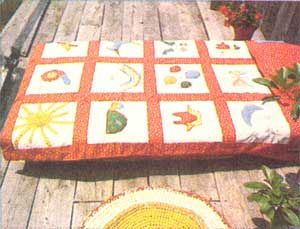
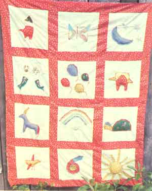

Is your child's artwork burgeoning from the cracks of the kitchen drawers? Has your young artist's creativity covered all the empty spaces on your walls? If so, why not let some of the drawings inspire a little creative needlework of your own?
Dancing balloons, imaginary unicorns, and brightly colored rainbows seem to flow almost continually from a child's mind onto paper, and-by using appliqué and embroidery-you can capture some of your youngster's creations in a beautiful quilt. (What better gift-of-a-lifetime could you put on a child's bed than a warm, personalized coverlet decorated with the little one's own fantasies?)
The first step in this project is to take all your child's pictures and sort through them. Each youngster usually has some special images that appear again and again in his or her drawings, and it's likely that you'll find a number of these that are the right size to transfer onto a cloth square (you'll have a "working area" of about 14" X 14" for each picture) just as they are. In the quilt shown here, the fat fairy, the snaky snail, and the butterfly were copied straight from drawings ... while the swimming mermaid and merman, the turtle, and the flying chick were enlarged a bit.
Once you've selected the sketches you'll use, divide them into those that are suitable for embroidery and those that lend themselves to appliqué. I found, for example, that the rainbow shown in the photograph had too many colors to appliqué successfully, while the turtle and the unicorn required just a few solid-color areas and thus were perfect for "cut out and sew on" art. (Actually, you'll find that most drawings seem to demand a combination of both crafts, with the embroidery most often used to add fine details . .. such as the fairy's wand, the owl's eyes, or the balloon's strings.)
To make a quilt large enough for a standard single bed, you'll need twelve 15" squares cut from preshrunk or prewashed muslin.
Then simply use tailor's chalk to draw the outlines of your chosen images on scraps of appropriately colored fabric. Be sure that-when you cut out the appliqué pieces-you leave enough material to turn the edges under before sewing the pattern in place. (You can either embroider around the edges or stitch them down with your machine.)
For some fullness and a three-dimensional effect, add a little stuffing under the larger pieces of appliqué. Also, since every decorated square will be different, you can bring harmony to the quilt by sticking to a few basic materials and colors ... always keeping in mind the hue of the fabric that will form your comforter's border.
The strips of material that create a frame effect around each picture (and border the quilt itself) are cut 4" wide, and-of those-you'll need nine 15" strips, four 65" strips, and two 55" strips. (These measurements allow 1/2" seams all around.)
Before you stitch the bedcovering together, lay out all the patchwork pictures and decide which ones look best next to each other. Then sew 15" strips between squares to make three vertical groups of four. Next, stitch the 65" strips between-and along the outer edges of-the three vertical pieces (each of which, of course, consists of four squares). The last 4"-wide strips to be added are the two 55" pieces at the ends of the quilt, which will join with the borders already in place to create the corners.
The middle "padding" layer of the quilt can be cotton batting or a not-so-beautiful (but still-serviceable) blanket. However, since you're using cotton material, make sure your inner filling is fairly light, so it won't put too much stress on the stitching. The three layers of the quilt-the colorful top, the center, and a 55" X 72" cotton backing-should then be tied together in every corner of each block with crochet thread ... before you turn the coverlet's outer edges in and stitch 'em shut.
It's almost impossible for an adult to create designs that have the natural simplicity, composition, and color of children's artwork, so your needlework quilt will have a very special, unique, childlike quality ... that's sure to be cherished for years-and maybe even generations -to come!
|
 |
 |
|